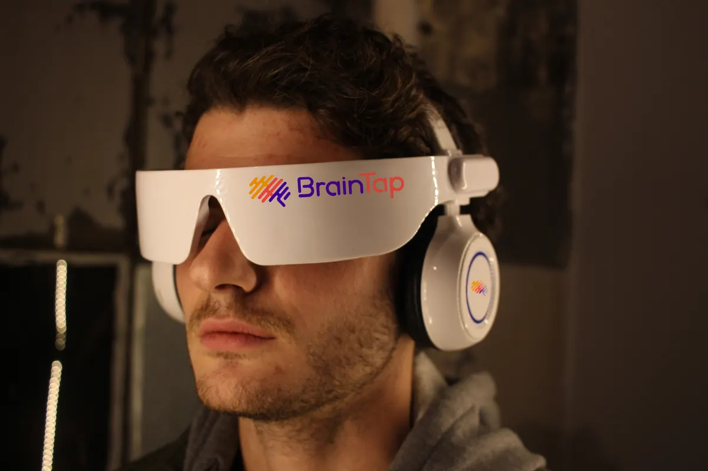
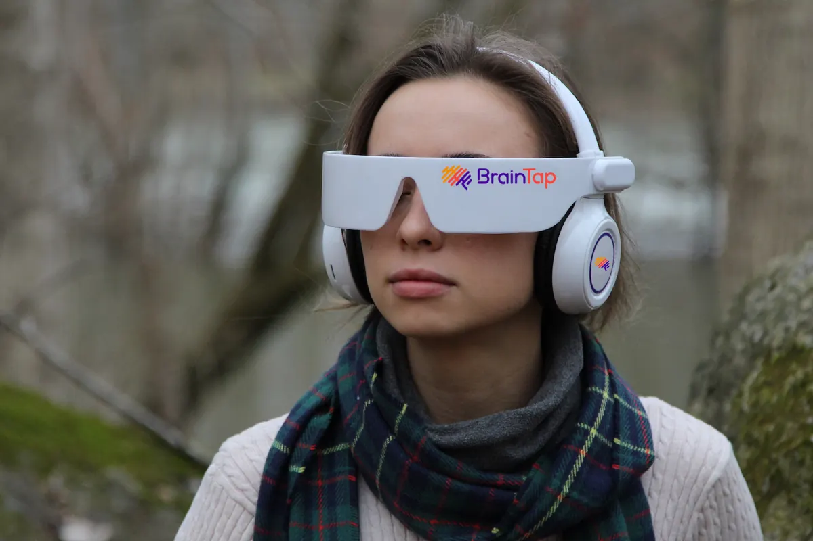

NeuralChek and BrainTap
A guided way to practice calm
Start with a NeuralChek reading, then relax with a guided BrainTap session. Run by certified associates in Henderson, in a program designed by Dr. Sharp, a licensed clinical professional counselor.
Your first visit: A NeuralChek reading followed by a guided BrainTap session.

How a visit works
What BrainTap is
BrainTap blends guided meditation with gentle sound and light to help you shift from fight-flight-freeze toward calm, rest and focus.
You recline and put on a lightweight headset. A calm voice guides you while soft tones and gentle light help you relax. If you’d rather not hear a voice, you can choose sessions with tones only, or tones with light.
Many people use BrainTap for 20 minutes a day as a routine for deep relaxation.

What clients use it for
- Winding down from a stressful stretch
- Practicing calm before high-pressure moments, like a presentation, a performance or a hard conversation
- Adding a relaxation practice alongside therapy
- Easing the tension that builds up with ongoing stress
With thousands of guided sessions, there’s one for most goals, from winding down to getting ready for a big day.
What NeuralChek is
NeuralChek provides a snapshot of your heart rate variability (HRV) and related biometrics. It provides a glimpse into your biofield and general level of stress at this moment in time.
We use it for education, not diagnosis. The goal isn’t a perfect number. It’s learning your own baseline, and it gives us a starting point to talk about stress, sleep and breathing. Over time, repeat readings can help you notice how your stress response changes.
Why with us
You can buy BrainTap online. Here, you get a program designed by a licensed counselor, a safety screening first, and a team that knows when relaxation isn’t enough.
- Start where you’re comfortable. Begin with a NeuralChek, or with a private consultation with Dr. Sharp.
- Safety comes first. Every client completes a screening before their first session.
- It complements care; it doesn’t replace it. BrainTap is never a substitute for therapy or medical treatment.
- Honest guidance. If BrainTap isn’t right for you, we’ll tell you. If counseling would help more, Dr. Sharp is here.
Continue at home
Want to keep practicing between visits? Ask about discounted pricing on the BrainTap headset and app when you buy in our office. You don’t need to be a client to buy a headset here, and walk-ins are welcome. Call ahead to check inventory.
Prefer to shop online? Explore BrainTap at home
What the research says
Guided relaxation has a long, well-established track record for easing stress.
Your brain produces rhythms called brainwaves. Five main types (delta, theta, alpha, beta and gamma) are linked to different mental states, from deep sleep to alert focus.
The calming effect of flickering light was noticed long before modern science. In the early 1900s, psychologist Pierre Janet observed that his patients felt less strain while watching flickering light, and researchers have studied light and sound stimulation ever since.
Today, studies suggest light and sound stimulation may support relaxation, sleep and focus, though scientists are still learning exactly how it works. Light, music and natural sounds are also known to support mood and ease stress.
Is it right for you?
We’ll talk first, or recommend something else, if you have:
- Epilepsy, a history of seizures or sensitivity to flashing lights
- Frequent migraines
- A pacemaker or a heart condition
- A history of dissociation or psychosis
- A history of brain injury
Before your first session, you’ll complete a short safety screening.
Cost
Your first visit includes a NeuralChek reading and a BrainTap session. These are private-pay wellness services. They aren’t covered by insurance and aren’t billed as therapy. We’ll go over pricing when we call, before you book anything.
Reserve your first visit
A NeuralChek reading and your first BrainTap session, in one visit.
Prefer to talk with Dr. Sharp first? Request a Private Consultation